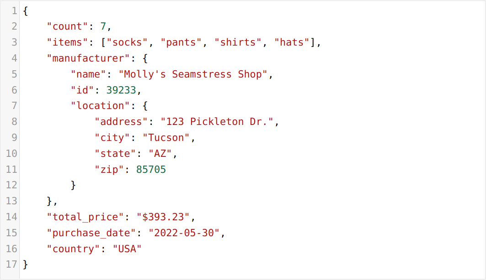

Assignment: 3. Scaffolding Metaphor for Coding
By: Tuomas Nummela
Date: 10/03/2025
Introduction
In this project we were tasked with designing a scaffolding material that acts as a metaphor for programming. One of my first ideas was something that would allow users to tinker with different data structure formats and learn the syntax more interactively than by working on a computer, or worse, by simply reading the syntax and trying to memorize parts of it.
I decided to focus on depicting the JSON syntax since it is very common and not too complicated to grasp through some studying. The first hands-on idea I got was to represent different parts of JSON syntax, such as field names, different value types and nested arrays and objects throught puzzle pieces made from cardboard. The pieces would then only connect in a way that stays true to the syntax. The two main objectives of the puzzle are to show that even the same data can be organized in many different structures and to also teach JSON syntax.
Design process
Iteration 1: Looking at a JSON example
To start, I examined some basic JSON data and identified key elements such as field names, string values, number values, booleans, arrays and nested objects.
Iteration 2: Cardboard sketching
Next I wrote some very basic JSON on a piece of cardboard with a marker and started drawing the outline for how that JSON could be divided into blocks. Notice that the field names connect to the root brackets differently than the values connect to the field names. This is to prevent the user from creating incorrect JSON by attaching values directly to the root brackets.

Iteration 3: Cut-out pieces of JSON syntax
Next I cut out the pieces using scissors. In hindsight using an x-acto knife would have produced much more consistent pieces.

Iteration 4: Playing around with the pieces
At this point I explored with the basic prototype different ways the pieces could be arranged to form different JSON objects and thought about what other kinds of JSON syntax pieces I should add.

Iteration 5: More syntax pieces
Introduced additional elements such as nested object brackets, booleans, and null values to expand the complexity of possible JSON structures. At this point I designed and cut out new pieces, introducing boolean and null values and nested objects into the mix.

Iteration 6: Playing around with the pieces (again)
Once again, I played around with the pieces and thought of how to make the experience more visual and fun. At this point I also struggled with connecting the pieces as they were much too different sizes and not cut uniformly. Using scissors was not a good choice.

Iteration 7: Color coding for piece types
At this point I feel like I had enough of different types of pieces and shifted to work on the visual appeal of them. I thus grouped and color-coded the pieces using sharpies of different colors according to the piece type:
- Field name: purple
- String value: orange
- Number value: blue
- Null value: red
- Boolean value: yellow
- Array brackets: dark green
- Object brackets: light green